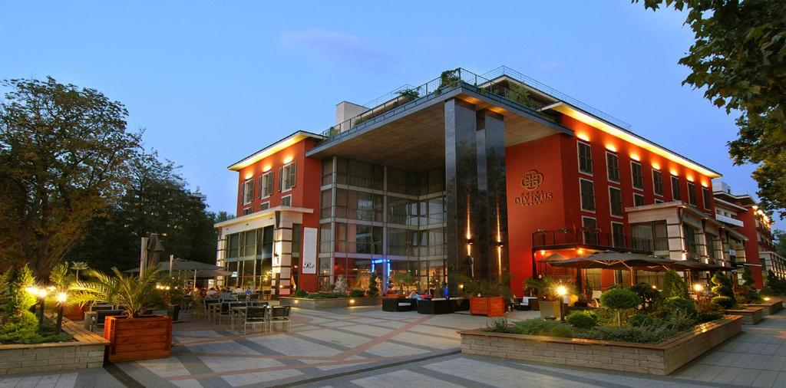

Bemutatás
Magyarország harmadik legnagyobb területű és második legnépesebb települése, Hajdú-Bihar megye és a Debreceni járás székhelye, megyei jogú város. A megye lakosságának mintegy 38,2%-a él itt, a Tiszántúl legnagyobb városa. Időnként „a kálvinista Róma” néven vagy „cívisváros”-ként emlegetik. A Kelet-Magyarország régió, az Észak-Alföld statisztikai régió és a Tiszántúl nagy táj szellemi, kulturális, gazdasági, idegenforgalmi és közlekedési központja, Magyarország egyik legdinamikusabban fejlődő nagyvárosa.
Ajánlatok
Olcsóbb lehetőség:

Megközelítés:
- S50 vonat (Kőbánya alsó)
- 2400ft
Szállás:
- Centrum Hotel Debrecen éjszaka: 22.231 Ft.
Drágább lehetőség:
Megközelítés:
- Dedikált busz
- 6000 ft
Szállás:
- Hotel Divinus éjszaka: 61.371 Ft.